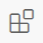
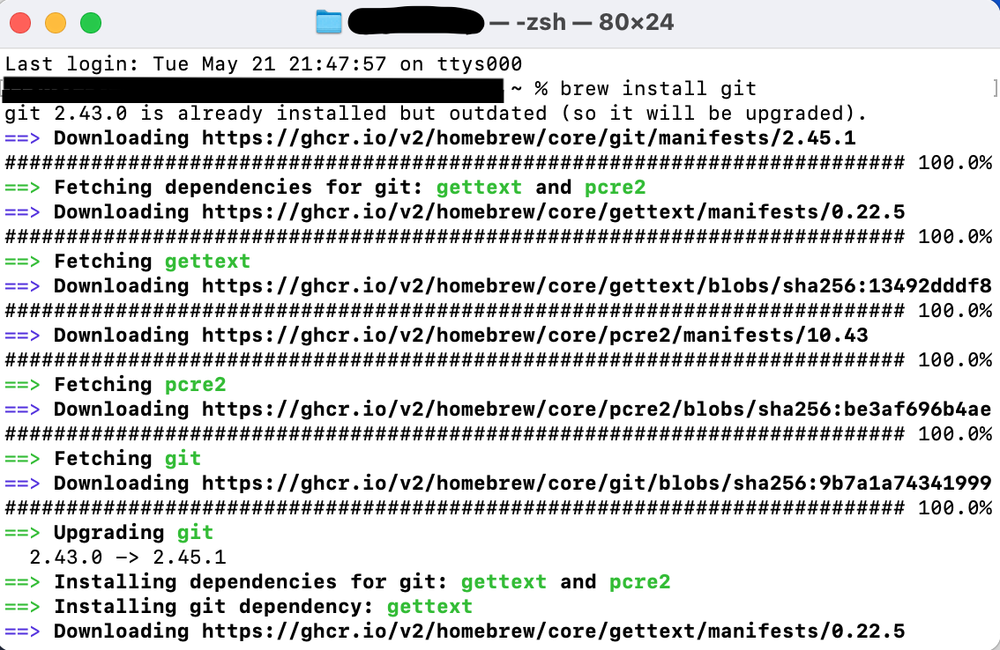
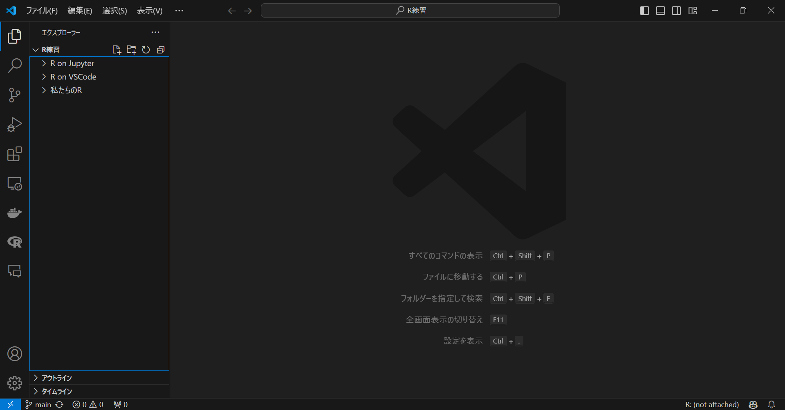
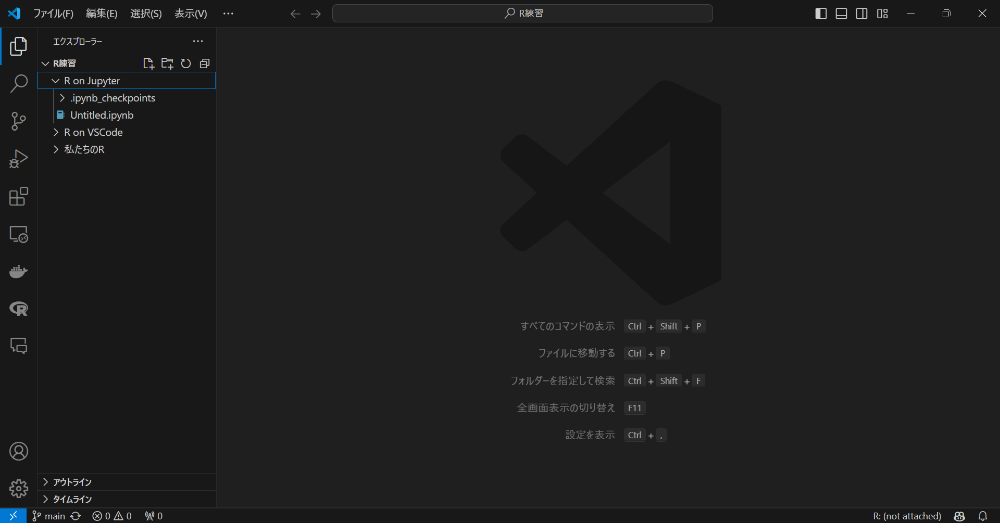
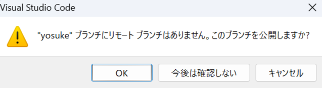

開発コンテナを使って R 環境を構築！
ローカル環境から卒業！
はじめに
Docker と VSCode を使って R の環境を構築する方法を説明します。
基本的な内容は次のページを参考にしており、個人的に使いやすいように修正を加えています。
開発コンテナを使うメリットは、環境を簡単に共有でき、他の環境に影響を受けずに作業ができることです。
また、最初は設定の際に結構待ち時間が生じますので、ご了承ください。
事前準備
まず、WSL2, Ubuntu, Homebrew, VSCode, Docker, Git, そして GitHub の準備をします。Windows と Mac での設定が異なるため、それぞれについて説明します。
ホスト側、共同作業者ともに事前準備が必要です。
WSL2（Windows ユーザーのみ）
PowerShell または Windows コマンドプロンプトを管理者権限で開く
- 右クリックで管理者権限を使えます。

以下のコマンドを入力して実行
- これでインストールはできるはずですが、詳しくはこちらのサイトを参照してください。
PowerShell
wsl --installユーザー名とパスワードを設定
インストールが終わると、Linux ディストリビューションのユーザー名とパスワードの作成を求められます1。
ユーザー名は何でも大丈夫です。パスワードもめちゃくちゃ簡単で問題ありません。
パスワードは画面上には表示されませんが、ちゃんと入力されています。慌てて何回も入力しないようにしてください。
エクスプローラーから Linux に入り、\Ubuntu\home\ユーザー名 がメインとなるディレクトリです。
Homebrew（Mac ユーザーのみ）
Mac ユーザーは Homebrew を使って諸々インストールしていくので、まだの方はここでインストールしてください。
ターミナルを開く
- アプリ一覧から「ターミナル」を探してください。
以下のコマンドを入力して実行
- パスワードを求められるので、入力してください。
Terminal
/bin/bash -c "$(curl -fsSL https://raw.githubusercontent.com/Homebrew/install/HEAD/install.sh)"VSCode
VSCode のダウンロードサイトからダウンロード、インストール
Download for Windows2 をクリックしてダウンロードできます。
インストールができたら、VSCode を開いてください。
（任意）日本語の拡張機能をインストール
画面左側に拡張機能のアイコン  があります。ここの検索ボックスに
MS-CEINTL.vscode-language-pack-jaと入力し、1番上に出てきたものをインストールします3。インストール後、VSCode を再起動すれば日本語が反映されていると思います。

拡張機能のインストール
拡張機能の検索ボックスで、次の ID を入力し、インストールします。
ms-vscode-remote.remote-containers(Dev Containers)ms-vscode-remote.remote-wsl(WSL, Windows ユーザーのみ)
WSL に接続（Windows ユーザーのみ）
VSCode から先ほどインストールした WSL に接続します。
画面左下の
><アイコンをクリックして、「WSL への接続」をクリックします。

Docker
Docker をインストールします。
Windows の方はここから Docker Desktop for Windows を、Mac の方はこちらからダウンロード＆インストール
設定の確認（Windows のみ）
インストール出来たら、画面上部の設定ボタンから Resources、WSL integration と進み、チェックボックスにチェック、Ubuntu がオンになっていることを確認してください。
たまに、何もしていないのにここがオフになっていて、トラブることがあります。
詳しくはこちらをご覧ください。日本語で書いてあります。

画面左側の Volumes に進み、Create からボリュームを作成
次の3つを作成します（大文字小文字に注意！）。
fonts,cache,TinyTeX

Git
Windows
Ubuntu で git をインストール
- Windows のアプリ一覧から Ubuntu を探し、開いてください。開いたら、以下のコマンドを入力して実行します。
Ubuntu
sudo apt-get install git
設定
- 以下のコマンドを入力、実行します。ユーザー名は何でも大丈夫です。
Ubuntu
git config --global user.name [任意のユーザ名]
git config --global user.email [任意のメールアドレス]Mac
Homebrew で git をインストール
- ターミナルを開いて、以下のコマンドを入力して実行します。
Terminal
brew install git
設定
以下のコマンドを入力、実行します。ユーザー名は何でも大丈夫です。
ここに限らずですが、
[]ごと置き換えてくださいね。
Terminal
git config --global user.name [任意のユーザ名]
git config --global user.email [任意のメールアドレス]GitHub アカウントの作成
ファイルは基本的に GitHub で管理するので、ここからアカウントを作成してください。
ポイント
GitHub アカウントを作成したら、VSCode にログインしておきましょう。
VSCode を開く
画面左下のアイコンをクリック
- GitHub でサインインを行う
GitHub にログインすることで、その後の作業がスムーズに進みます。
事前準備は以上です！
開発環境の構築
Docker を用いて環境を構築するにあたり、柳本和春さんのテンプレートをベースに作成しています。詳しくは柳本さんの 記事 をご覧ください。
主な変更点は以下の通りです。
RStudio の設定を追加（パネルの配置など）
それに伴う Dockerfile の加筆修正と、更なる設定の追加
Quarto のインストールを追加
個人的にエラーが生じた部分を修正
日本語のロケール設定を追加
まずはホストが行う作業から説明します。
ホスト側の設定
GitHub リポジトリを作成
テンプレートの GitHub リポジトリ にアクセス
画面右の「Use this template」から「Create a new repository」を選択
Repository name を記入
Private を選択
- 通常のプロジェクトなら Private で OK
「Create repository」をクリック
リポジトリをクローン
VSCode を開く
画面左側のアイコンから「ソース管理」4を開く
「リポジトリの複製」を選択し、さらに「GitHub から複製」を選ぶ
リポジトリを選択し、クローン
リポジトリは、「ユーザー名/リポジトリ名」の形式で表示されます。
基本的に表示されると思いますが、表示されない場合は手入力してください。
クローンしたリポジトリを開くか問われるので、開いてください。
画面右下に「コンテナーで再度開く」と出たらクリック
出ない場合、画面左下「WSL: Ubuntu」5をクリックし、「コンテナーで再度開く」を選択してください。
初めて環境を構築する場合、ここでかなり時間がかかるので辛抱強く待ちましょう。

エクスプローラーを開き、\\wsl.localhost\Ubuntu\home\ユーザー名 を確認してみてください。リポジトリ名と同じフォルダができていると思います。
Mac の場合は、ユーザー名の下にできているはずです。
クローンしたフォルダを見てみると、リポジトリにはあるはずのファイルやフォルダが見当たらないかもしれません。

このようなときは、Finder の隠しファイルを表示する設定を変更する必要があります。
以下をターミナルで実行してください。
Terminal
defaults write com.apple.finder AppleShowAllFiles TRUE
killall Finderこれで、隠しファイルも表示されるようになります。
正直なところ、この設定は隠しファイルが邪魔であればしなくてもよいと思います6。VSCode 上ではきちんと表示されますので。
RStudio で開く
ここで、ブラウザを用いて RStudio を開きます。
任意のブラウザで、アドレスバーに
localhost:8787と入力して開く右上の
![]() をクリックし、「New Project…」を選択
をクリックし、「New Project…」を選択「Existing Directory」を選択
「Browse…」より work を選択して Choose をクリック
- Create project をクリックするとプロジェクトが作成されます。
コンソールに以下を入力して実行
renvはパッケージを管理するためのパッケージです。Dockerfile でインストールすることを指示しているので、コンソールでインストールせずとも既に使用可能です7。
renv::init()Python の設定
Python を使う場合、以下のパッケージをインストールしておきます。使わない場合はスキップしてください。
使い方としては、Quarto 上で Python のコードを書くことを想定しています。そのために必要なパッケージですが、その他のパッケージを使用する場合も同様の方法でインストールしてください。
VSCode に戻る
画面上部「ターミナル」より「新しいターミナル」を選択
以下のコマンドを入力して実行
Terminal
pip install ipykernel jupyterパッケージは cache にキャッシュがあるので、1回インストールすれば、2回目以降の環境構築では不要です。
DVC の設定
DVC はデータを管理するためのツールです。
事前準備として、自分の Google ドライブの任意の場所で、データを入れる用のフォルダを作成しておいてください。
また、共同プロジェクトの場合は、フォルダの共有も設定してください。
VSCode に戻る
画面上部「ターミナル」より「新しいターミナル」を選択
- 既に画面下部にターミナルが表示されている場合はスキップして大丈夫です。
以下のコマンドを入力して実行
- 初めて環境構築するときに1回実行しておけば、2回目以降の環境構築では不要です。
Terminal
pip install dvc dvc-gdriveGoogle ドライブで作成したフォルダの ID をコピー
- ID は、ドライブでフォルダを開いたときの URL で、最後のスラッシュ（~/folders/）より右側の部分です。
次のコマンドを入力して実行
- 最後の部分（四角括弧ごと）をコピーした ID に変更してください。
Terminal
dvc init && dvc remote add -d myremote gdrive://[Google DriveのフォルダID]LaTeX の設定
R Markdown などで \(\LaTeX\) を使用するために、TinyTeX をインストールします。
RStudio のコンソールに以下のコマンドを入力して実行してください。
また、TinyTeX もキャッシュされるので、1回インストールすれば、2回目以降の環境構築では実行不要です。
R
tinytex::install_tinytex(dir = "/home/rstudio/.TinyTeX", force = TRUE)TinyTeX は、\(\LaTeX\) コードをコンパイルする際に必要なパッケージを自動でダウンロードしてくれるので、ローカルに面倒な設定をしなくて良いのが魅力です。
R Markdown や Quarto での PDF 出力の仕方については、こちらの記事もご覧ください。
Julia の設定
参考記事の設定に基づき、Julia が使えるようになっているため、その始め方についても書いておきます。特に使う予定がなければ、スキップしてください。
- VSCode に戻り、ワーキングディレクトリに
Project.tomlというファイルを作成
VSCode 上でファイルやフォルダを作成するためには、左側のアイコン一番上の「エクスプローラー」をクリックし、その中の上部にあるアイコンの「新しいファイル…」や「新しいファイル…」を選択することでできます。
ここで注意点ですが、状況によっては意図せずフォルダの中に作ってしまうことがあります。
ワーキングディレクトリにファイルを作成したい場合は、まずエクスプローラーの空き部分をクリックします。すると、枠全体が青い線で囲まれると思います。
この状態であれば、親フォルダにファイルやフォルダが新規作成されます。下の画像の左側に注目してください。

一方、特定のフォルダの中に作成したい場合は、そのフォルダをクリックしてから新規作成を行ってください。

キーボードで
Ctrl+Shift+Pを入力8「Julia: Start REPL」を選択
少し下の方にあると思います。検索をかけると楽かもしれません。1度使ったものは上に表示される仕組みなので、2回目以降は探しやすいと思います。
少し時間がかかります。
ターミナルで、以下のコマンドを入力して実行
Julia
using Pkg
Pkg.activate()以上で Julia の事前準備ができました。
共同プロジェクトの場合
共同プロジェクトの場合は、GitHub で共有するため、以下の手順を踏んでおいてください。
GitHub リポジトリでコラボレーターを追加
リポジトリの Settings から Collaborators に進み、コラボレーターを追加してください。
Add people から招待できます。
また、ホスト側の環境構築もここで一区切りです！
共同作業者の設定
共同作業者も事前準備は終わらせておいてください。
GitHub で招待を受ける
メールが届いているはずですので、そこから GitHub にログインしてください。
リポジトリにアクセスできるようになります。
リポジトリをクローン
ホスト側が作成したリポジトリをクローンします。
ホスト側の設定と同様にしてクローンし、開いてください。
一旦ここまでで、共同作業者の設定は終わりです。
作業
ワークフローについて説明します。
ワークフロー、特に GitHub 関連についてはこちらの記事で詳しめに解説しましたので、そちらも参考にしてください。
作業開始時
作業を開始する際は、以下の手順で作業を開始してください。
VSCode で開く
- ホスト側、共同作業者ともに、VSCode の開発コンテナで開いてください。
作業ブランチを作成
画面左下、
mainと書かれているところをクリックし、「＋新しいブランチの作成…」を選択してください。ブランチ名は、作業内容がわかるようにしてください。
例えば、
feature/作業内容など。
作業ブランチに切り替え
- 再び
mainと書かれているところをクリックし、作成したブランチを選択してください。
- 再び
作業を開始
作業終了時
先に作業終了時について説明します。ここで想定しているのは共同作業を行っている場合です。
単独での業務の場合は、ブランチを作成する必要はないと思います。コミットとプッシュを繰り返す流れで十分です。
作業内容をコミット
プッシュ
「ソース管理」の右側にある「…」をクリックし、「プッシュ」を選択してください。
これで、作業内容が GitHub にアップロードされます。
ブランチを公開しますか？と聞かれたら「OK」を選択してください。

ところで、現在は作業中のブランチが先ほど作成したブランチになっていると思います。
これを main にマージするために、プルリクエストを作成します。要は、自分が作成したブランチをホスト側に main へ取り込んでもらうための手続きです。
このステップを挟む理由は、例えば正常に作動しないコードが main に勝手にマージされることを防ぐためです。
プルリクエスト（GitHub）
GitHub にアクセスし、作業中のリポジトリを開いてください。
画面上部の「Pull requests」をクリックし、「New pull request」をクリックしてください。
作業中のブランチと
mainを比較して、プルリクエストを作成します。作業内容を説明し、ホスト側にマージしてもらうようにリクエストします。
承認されれば、無事
mainにマージされます。
プル（VSCode）
ホスト側で、プルリクエストが承認されたら、
mainにマージされた内容を取り込むためにプルします11。画面下部のブランチ名をクリックし、
mainを選択してください。これで再びmainに切り替わります。再び画面左からの「ソース管理」から、「ソース管理」の右側にある「…」をクリックし、「プル」を選択してください。
これで、ローカルの
mainが最新の状態になります。
この流れを繰り返すことで作業のサイクルを回していきます。
繰り返しになりますが、GitHub についてはこちらの記事も参考にしてください。
R のパッケージ
ここからの作業で重要なことですが、これから説明する renv 等で記録したら、コミット、プッシュ、プルを通じてファイルを共有することを忘れないでください。
作業中新たにパッケージを使用した場合、それを renv.lock ファイルに記録することで、必要なパッケージを共同作業者と共有することができます。
バージョンごと記録できるので、全く同じ環境を再現することが可能です。
R のコンソールで以下を実行
新しいパッケージをインストールし、コード内で使用したら、以下のコードを実行してください12。
renvがアクティベートされていない場合、アクティベートする必要がありますが、おそらく実行した際に「renv をアクティベートして lock ファイルに記録する」というような選択肢が提示されますので、それを選んでください。以下のコードでアクティベートすることも可能です。
renv::snapshot()renv::activate()（共同作業者）パッケージをインストール
使用したパッケージは
renv.lockに記録されているため、そこから（バージョンもホスト側に揃えて）インストールが可能です。作業者は lock ファイルをアップデートしたら、コミットとプッシュを行ってください。
共同作業者はその lock ファイルをプルしておいてください。
バージョンの違いにより実行できないようなことを防げます。
以下のコードを実行してください。
renv::restore()これで R の開発環境を揃えることができます。
また、新しいパッケージを使ったら、その作業が終わるごとに renv::snapshot() 記録し、共同作業者は renv::restore() でインストールしてください。
Python のパッケージ
設定では Python の設定も加えていますので、必要に応じて Python も使用できます。
また、そもそも DVC が Python のパッケージなので、それも renv と同様に記録して共有します。
Python のパッケージを追加
先ほどと同様に、新しいターミナルを開いて、以下のコードでパッケージをインストールします。
DVC 以外特に使うものがなければ、ここはスキップしてください。
Terminal
pip install [パッケージ名]パッケージを記録
R と同様に、作業が終わったら以下のコードでパッケージを記録します。
特に何もインストールしていなくても、DVC を使っていますので、これは実行してください。
Terminal
pip freeze > requirements.txt（共同作業者）パッケージをインストール
ここでも事前に
.txtファイルを共有しておいてください。共同作業者は、次のコードで Python パッケージをインストールします。
Terminal
pip install -r requirements.txtデータの管理
データは DVC で管理します。データは Google Drive 上で保管されます。
ワーキングディレクトリに、
dataというフォルダを作成データが入ったら、以下のコードを実行
dataフォルダごとドライブに追加します。dataフォルダは.gitignoreに記載されているため、GitHub にはアップロードされません。
Terminal
dvc add data/データは、Windows のエクスプローラーや Mac の Finder から直接フォルダに入れて大丈夫です（通常の Windows や Mac での作業のように）。
データをプッシュした後に Google Drive を見てもらえれば分かりますが、よくわからない形で保存されています。DVC の仕組みがそうなっているからなので、決してファイルが破損しているわけではありません。
ちなみに Windows ユーザーの方で、一回ローカルに落としてから Linux にデータ等を入れたら Zone.Identifier というファイルができることがありますが、これは無視して大丈夫です。邪魔であればまとめて消してください。
データをアップロード
- 以下のコードでデータをプッシュします。
Terminal
dvc push最初は add と push をする過程でアカウントの認証が必要になりますが、表示に従って認証を進めてください13。
（共同作業者）データのダウンロード
- 以下のコードでデータをダウンロードします。
Terminal
dvc pullJulia のパッケージ
Julia はパッケージが自動で Project.toml に保存されるため、共同作業者がインストールするだけで大丈夫です。
先ほどと同じ手順で環境をアクティベートする
以下のコードでパッケージをインストール
Julia
Pkg.instantiate()まとめ
これらの作業を通じて、共同作業者もホスト側と同じ環境を揃えることができます。
環境を揃えるためには、コミット、プッシュ、プルを行い、記録したファイルを共有することが重要です。
単独での場合は、ブランチを作成する必要はないですが、コミット、プッシュで管理を行いましょう。
以上がワークフローです。お疲れ様でした！
環境構築まとめ
作業フローは、超適当にまとめると次のようになります。
ホスト
必要なソフト等をインストールし、事前準備を行う。
- WSL2, Ubuntu, Homebrew, VSCode, Docker, Git, GitHub
GitHub でリポジトリをインポート、クローン
RStudio Server でプロジェクトを作成
renv::init()で renv を開始renv::snapshot()で適宜パッケージを記録
dataフォルダを作成し、DVC で管理データは
data内に追加dvc add data/とdvc pushを使用
VSCode 上でコミット、プッシュ
共同作業者
必要なソフト等をインストールし、事前準備を行う。
- WSL2, Ubuntu, Homebrew, VSCode, Docker, Git, GitHub
GitHub でリポジトリをクローン
RStudio Server でプロジェクトを開く
renv::restore()でパッケージをインストール
dvc pullでデータをダウンロードVSCode 上でコミット、プッシュ
作業中
GitHub にコミット、プッシュ、プルを繰り返す。
データも新たに追加した場合、DVC で add, push, pull を行う。
おわりに
今回は Docker & VSCode を用いた開発環境を説明しました。
個人的な経験として、環境構築はエラーとの戦いです。できるだけエラーに遭遇しないよう丁寧に書いたつもりですが、まだまだ把握していないエラーがたくさんあると思います。
何かエラー等ありましたら、コメントしていただけると幸いです。
参考文献
追記
2024/5/11：リポジトリ作成の手順を変更
2024/5/22：Mac への対応と、内容の刷新
2024/5/25：リポジトリのクローン方法を変更
2024/6/10：テンプレートのキャッシュに関する設定を変更
注
求められない場合は、続けて
wslとだけ入力してください。↩︎もしくは Mac↩︎
単に Japanese でも出てきます。笑↩︎
上から3番目↩︎
Mac なら
><↩︎TRUE のところを FALSE にして再度実行すれば消せます。↩︎
余談ですが、
renv::init()のようにパッケージ名::関数のような書き方をすれば、library(パッケージ名)をせずとも関数を使えます。1度だけ使いたいようなときに便利です。↩︎Ctrlは Mac だとcommand↩︎ステージしていないとコミットできません。↩︎
どのような作業をしたのか↩︎
現段階ではまだローカルには
mainが反映されていません。↩︎インストールしただけでコード内で使用していない場合は記録できません。↩︎
私の場合認証の読み込みが終わらない問題によく直面するので、その際にはターミナルを消し、再度新しいターミナルで実行するようにしています。↩︎